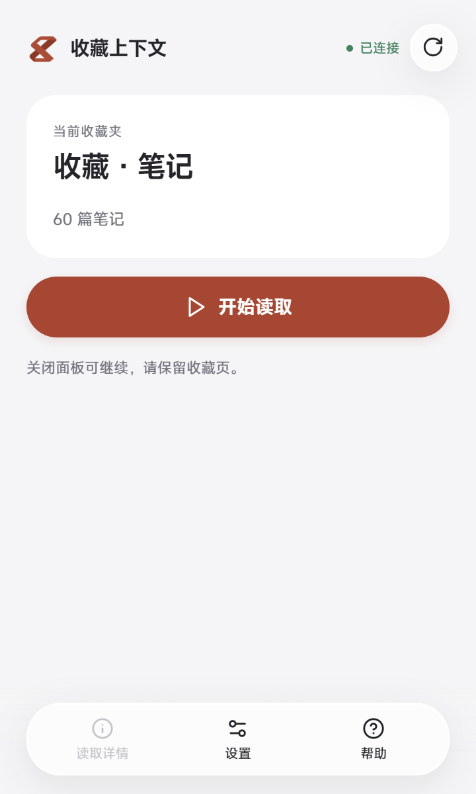
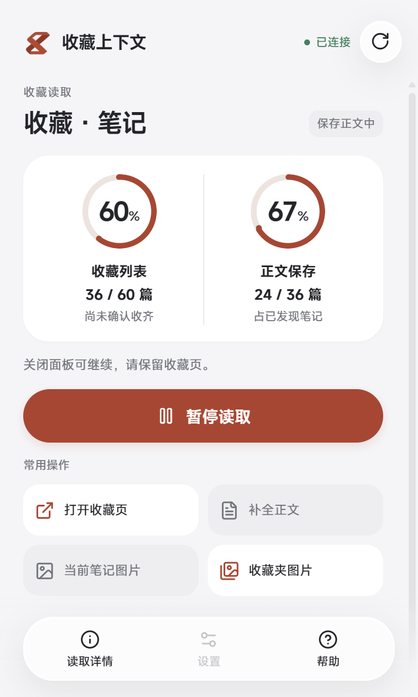

在 README「开始使用」中找到这段话。
请帮我安装 xhs-context
github.com/13-pieces-teen/xhs-context
按安装指南检查环境，保留已有资料库。
告诉我下一步需要操作什么。
打开能执行本机命令的 Agent，例如 Codex。
请帮我安装 xhs-context：
https://github.com/13-pieces-teen/xhs-context
优先复用本机安装，按项目指南完成配置。
等 Agent 检查完成，再进入下一段「加载扩展」。
本地组件检查通过
下一步：在浏览器加载这个文件夹
这是示例路径，请使用你的安装结果。
Chrome 输入 chrome://extensions 后按回车。
启用开发者模式后，点击页面左上方的按钮。
使用上一步安装时返回的位置。
在已登录的小红书个人主页，进入「收藏 → 笔记」。
打开浏览器扩展菜单 → 收藏上下文
核对当前收藏夹，并确认面板显示「已连接」。

收藏列表收集与正文保存是两个不同的进度。

安装 Skill 后，在新聊天里开始使用。
先说使用 xhs-context，再写具体问题。
使用 xhs-context 查询我的收藏。
找出马德里的小吃，列出店名、
作者提到的特点和原文出处。
不确定或缺失的内容请标出来。
有依据的回答，也应告诉你哪些内容没有读到。
店名 / 方法 / 推荐依据
缺失说明：有图片尚未保存